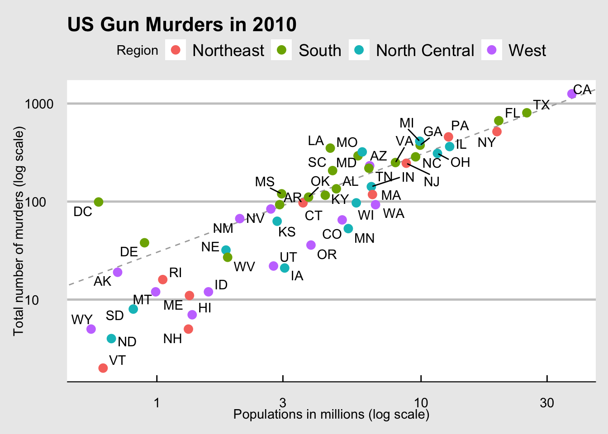
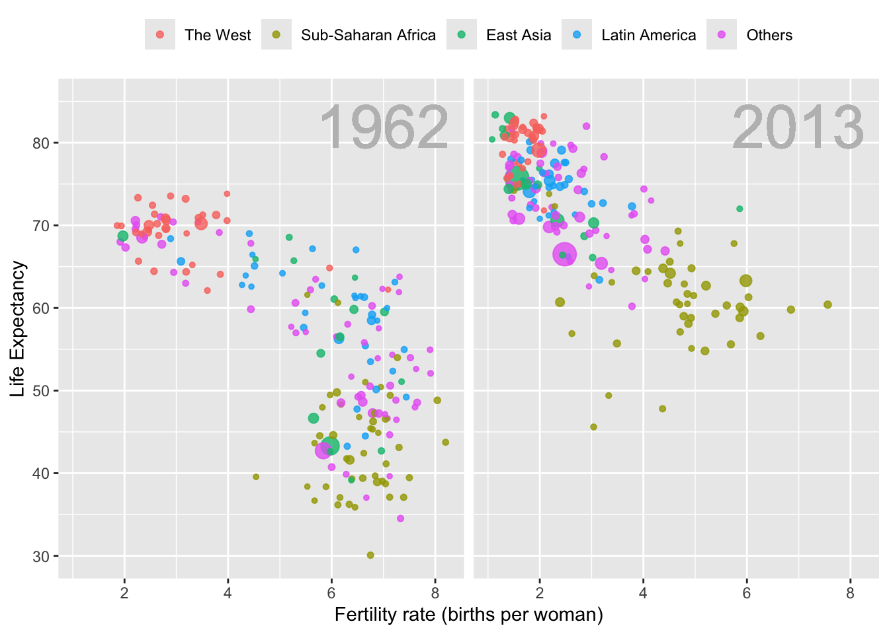
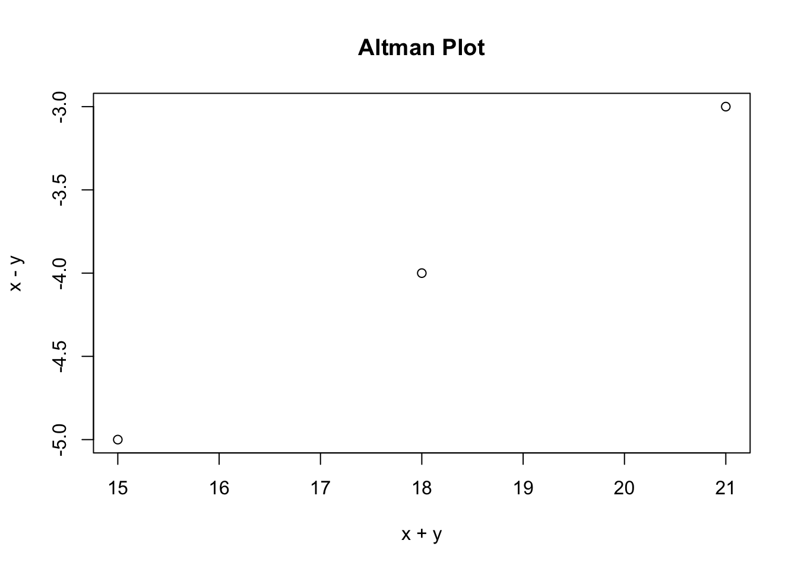
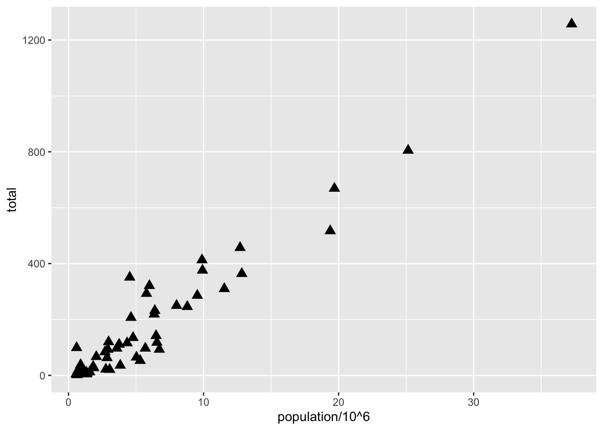
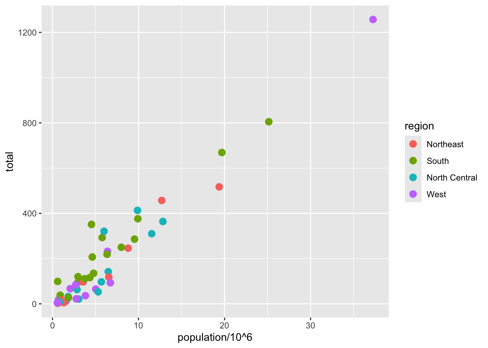
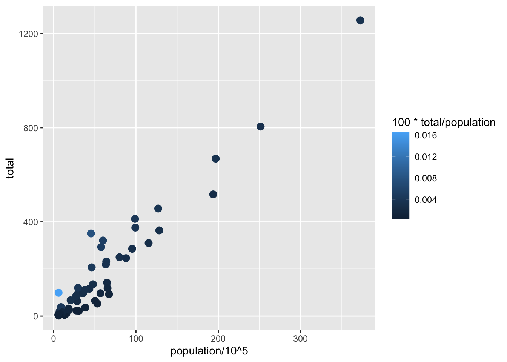
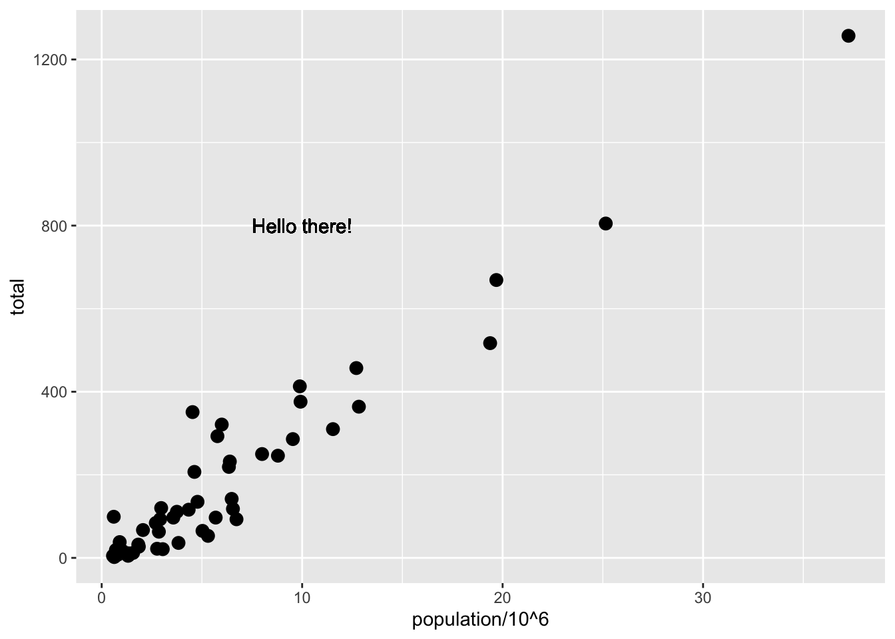

Looking at the numbers and character strings that define a dataset is rarely useful. To convince yourself, print and stare at the US murders data table:
library(dslabs)data(murders)head(murders)
state abb region population total
1 Alabama AL South 4779736 135
2 Alaska AK West 710231 19
3 Arizona AZ West 6392017 232
4 Arkansas AR South 2915918 93
5 California CA West 37253956 1257
6 Colorado CO West 5029196 65
What do you learn from staring at this table? Even though it is a relatively straightforward table, we can’t learn anything. For starters, it is grossly abbreviated, though you could scroll through. In doing so, how quickly might you be able to determine which states have the largest populations? Which states have the smallest? How populous is a typical state? Is there a relationship between population size and total murders? How do murder rates vary across regions of the country? For most folks, it is quite difficult to extract this information just by looking at the numbers. In contrast, the answer to the questions above are readily available from examining this plot:
library(tidyverse)library(ggthemes)library(ggrepel)r <- murders %>%summarize(pop=sum(population), tot=sum(total)) %>%mutate(rate = tot/pop*10^6) %>%pull(rate)murders %>%ggplot(aes(x = population/10^6, y = total, label = abb)) +geom_abline(intercept =log10(r), lty=2, col="darkgrey") +geom_point(aes(color=region), size =3) +geom_text_repel() +scale_x_log10() +scale_y_log10() +xlab("Populations in millions (log scale)") +ylab("Total number of murders (log scale)") +ggtitle("US Gun Murders in 2010") +scale_color_discrete(name="Region") +theme_economist_white()

We are reminded of the saying: “A picture is worth a thousand words”. Data visualization provides a powerful way to communicate a data-driven finding. In some cases, the visualization is so convincing that no follow-up analysis is required. You should consider visualization the most potent tool in your data analytics arsenal.
The growing availability of informative datasets and software tools has led to increased reliance on data visualizations across many industries, academia, and government. A salient example is news organizations, which are increasingly embracing data journalism and including effective infographics as part of their reporting.
A particularly salient example—given the current state of the world—is a Wall Street Journal article1 showing data related to the impact of vaccines on battling infectious diseases. One of the graphs shows measles cases by US state through the years with a vertical line demonstrating when the vaccine was introduced.
Warning: Using `size` aesthetic for lines was deprecated in ggplot2 3.4.0.
ℹ Please use `linewidth` instead.
Another striking example comes from a New York Times chart2, which summarizes scores from the NYC Regents Exams. As described in the article3, these scores are collected for several reasons, including to determine if a student graduates from high school. In New York City you need a 65 to pass. The distribution of the test scores forces us to notice something somewhat problematic:
The most common test score is the minimum passing grade, with very few scores just below the threshold. This unexpected result is consistent with students close to passing having their scores bumped up.
This is an example of how data visualization can lead to discoveries which would otherwise be missed if we simply subjected the data to a battery of data analysis tools or procedures. Data visualization is the strongest tool of what we call exploratory data analysis (EDA). John W. Tukey4, considered the father of EDA, once said,
“The greatest value of a picture is when it forces us to notice what we never expected to see.”
Many widely used data analysis tools were initiated by discoveries made via EDA. EDA is perhaps the most important part of data analysis, yet it is one that is often overlooked.
Data visualization is also now pervasive in philanthropic and educational organizations. In the talks New Insights on Poverty5 and The Best Stats You’ve Ever Seen6, Hans Rosling forces us to notice the unexpected with a series of plots related to world health and economics. In his videos, he uses animated graphs to show us how the world is changing and how old narratives are no longer true.

It is also important to note that mistakes, biases, systematic errors and other unexpected problems often lead to data that should be handled with care. Failure to discover these problems can give rise to flawed analyses and false discoveries. As an example, consider that measurement devices sometimes fail and that most data analysis procedures are not designed to detect these. Yet these data analysis procedures will still give you an answer. The fact that it can be difficult or impossible to notice an error just from the reported results makes data visualization particularly important.
Today, we will discuss the basics of data visualization and exploratory data analysis. We will use the ggplot2 package to code. To learn the very basics, we will start with a somewhat artificial example: heights reported by students. Then we will cover the two examples mentioned above: 1) world health and economics and 2) infectious disease trends in the United States.
Of course, there is much more to data visualization than what we cover here. The following are references for those who wish to learn more:
ER Tufte (1983) The visual display of quantitative information. Graphics Press.
ER Tufte (1990) Envisioning information. Graphics Press.
ER Tufte (1997) Visual explanations. Graphics Press.
WS Cleveland (1994) The elements of graphing data. CRC Press.
A Gelman, C Pasarica, R Dodhia (2002) Let’s practice what we preach: Turning tables into graphs. The American Statistician 56:121-130.
NB Robbins (2004) Creating more effective graphs. Wiley.
A Cairo (2013) The functional art: An introduction to information graphics and visualization. New Riders.
N Yau (2013) Data points: Visualization that means something. Wiley.
We also do not cover interactive graphics, a topic that is both too advanced for this course and too unweildy. Some useful resources for those interested in learning more can be found below, and you are encouraged to draw inspiration from those websites in your projects:
Exploratory data visualization is perhaps the greatest strength of R. One can quickly go from idea to data to plot with a unique balance of flexibility and ease. For example, Excel may be easier than R for some plots, but it is nowhere near as flexible. D3.js may be more flexible and powerful than R, but it takes much longer to generate a plot. One of the reasons we use R is its incredible flexibility and ease.
Throughout this course, we will be creating plots using the ggplot27 package.
library(dplyr)library(ggplot2)
Many other approaches are available for creating plots in R. In fact, the plotting capabilities that come with a basic installation of R are already quite powerful. There are also other packages for creating graphics such as grid and lattice. We chose to use ggplot2 in this course because it breaks plots into components in a way that permits beginners to create relatively complex and aesthetically pleasing plots using syntax that is intuitive and comparatively easy to remember.
One reason ggplot2 is generally more intuitive for beginners is that it uses a so-called “grammar of graphics”8, the letters gg in ggplot2. This is analogous to the way learning grammar can help a beginner construct hundreds of different sentences by learning just a handful of verbs, nouns and adjectives without having to memorize each specific sentence. Similarly, by learning a handful of ggplot2 building blocks and its grammar, you will be able to create hundreds of different plots.
Another reason ggplot2 is easy for beginners is that its default behavior is carefully chosen to satisfy the great majority of cases and is visually pleasing. As a result, it is possible to create informative and elegant graphs with relatively simple and readable code.
One limitation is that ggplot2 is designed to work exclusively with data tables in tidy format (where rows are observations and columns are variables). However, a substantial percentage of datasets that beginners work with are in, or can be converted into, this format. An advantage of this approach is that, assuming that our data is tidy, ggplot2 simplifies plotting code and the learning of grammar for a variety of plots. You should review the previous content about tidy data if you are feeling lost.
To use ggplot2 you will have to learn several functions and arguments. These are hard to memorize, so we highly recommend you have the ggplot2 cheat sheet handy. Just search for “ggplot2 cheat sheet”.
The components of a graph
We will eventually construct a graph that summarizes the US murders dataset that looks like this:
We can clearly see how much states vary across population size and the total number of murders. Not surprisingly, we also see a clear relationship between murder totals and population size. A state falling on the dashed grey line has the same murder rate as the US average. The four geographic regions are denoted with color, which depicts how most southern states have murder rates above the average.
This data visualization shows us pretty much all the information in the data table. The code needed to make this plot is relatively simple. We will learn to create the plot part by part.
The first step in learning ggplot2 is to be able to break a graph apart into components. Let’s break down the plot above and introduce some of the ggplot2 terminology. The main five components to note are:
Data: The US murders data table is being summarized. We refer to this as the data component.
Geometry: The plot above is a scatterplot. This is referred to as the geometry component. Other possible geometries are barplot, histogram, smooth densities, qqplot, boxplot, pie (ew!), and many, many more. We will learn about these later.
Aesthetic mapping: The plot uses several visual cues to represent the information provided by the dataset. The two most important cues in this plot are the point positions on the x-axis and y-axis, which represent population size and the total number of murders, respectively. Each point represents a different observation, and we map data about these observations to visual cues like x- and y-scale. Color is another visual cue that we map to region. We refer to this as the aesthetic mapping component. How we define the mapping depends on what geometry we are using.
Annotations: These are things like axis labels, axis ticks (the lines along the axis at regular intervals or specific points of interest), axis scales (e.g. log-scale), titles, legends, etc.
Style: An overall appearance of the graph determined by fonts, color palattes, layout, blank spaces, and more.
We also note that:
The points are labeled with the state abbreviations.
The range of the x-axis and y-axis appears to be defined by the range of the data. They are both on log-scales.
There are labels, a title, a legend, and we use the style of The Economist magazine.
All of the flexibility and visualization power of ggplot is contained in these four elements (plus your data)
ggplot objects
We will now construct the plot piece by piece.
We start by loading the dataset:
library(dslabs)data(murders)
The first step in creating a ggplot2 graph is to define a ggplot object. We do this with the function ggplot, which initializes the graph. If we read the help file for this function, we see that the first argument is used to specify what data is associated with this object:
ggplot(data = murders)
We can also pipe the data in as the first argument. So this line of code is equivalent to the one above:
murders %>%ggplot()
It renders a plot, in this case a blank slate since no geometry has been defined. The only style choice we see is a grey background.
What has happened above is that the object was created and, because it was not assigned, it was automatically evaluated. But we can assign our plot to an object, for example like this:
p <-ggplot(data = murders)class(p)
[1] "gg" "ggplot"
To render the plot associated with this object, we simply print the object p. The following two lines of code each produce the same plot we see above:
print(p)p
Geometries (briefly)
In ggplot2 we create graphs by adding geometry layers. Layers can define geometries, compute summary statistics, define what scales to use, create annotations, or even change styles. To add layers, we use the symbol +. In general, a line of code will look like this:
DATA %>% ggplot() + LAYER 1 + LAYER 2 + ... + LAYER N
Usually, the first added layer after ggplot() + defines the geometry. After that, we may add additional geometries, we may rescale an axis, we may add annotations and labels, or we may change the style. For now, we want to make a scatterplot like the one you all created in Lab 0. What geometry do we use?

Taking a quick look at the cheat sheet, we see that the ggplot2 function used to create plots with this geometry is geom_point.
(Image courtesy of RStudio9. CC-BY-4.0 license10.)
Geometry function names follow the pattern: geom_X where X is the name of some specific geometry. Some examples include geom_point, geom_bar, and geom_histogram. You’ve already seen a few of these. We will start with a scatterplot created using geom_point() for now, then circle back to more geometries after we cover aesthetic mappings, layers, and annotations.
For geom_point to run properly we need to provide data and an aesthetic mapping. The simplest mapping for a scatter plot is to say we want one variable on the X-axis, and a different one on the Y-axis, so each point is an {X,Y} pair. That is an aesthetic mapping because X and Y are aesthetics in a geom_point scatterplot.
We have already connected the object p with the murders data table, and if we add the layer geom_point it defaults to using this data. To find out what mappings are expected, we read the Aesthetics section of the help file ?geom_point help file:
> Aesthetics
>
> geom_point understands the following aesthetics (required aesthetics are in bold):
>
> **x**
>
> **y**
>
> alpha
>
> colour
>
> fill
>
> group
>
> shape
>
> size
>
> stroke
and—although it does not show in bold above—we see that at least two arguments are required: x and y. You can’t have a geom_point scatterplot unless you state what you want on the X and Y axes.
Aesthetic mappings
Aesthetic mappings describe how properties of the data connect with features of the graph, such as distance along an axis, size, or color. The aes function connects data with what we see on the graph by defining aesthetic mappings and will be one of the functions you use most often when plotting. The outcome of the aes function is often used as the argument of a geometry function. This example produces a scatterplot of population in millions (x-axis) versus total murders (y-axis):
murders %>%ggplot() +geom_point(aes(x = population/10^6, y = total))
Instead of defining our plot from scratch, we can also add a layer to the p object that was defined above as p <- ggplot(data = murders):
p +geom_point(aes(x = population/10^6, y = total))
The scales and annotations like axis labels are defined by default when adding this layer (note the x-axis label is exactly what we wrote in the function call). Like dplyr functions, aes also uses the variable names from the object component: we can use population and total without having to call them as murders$population and murders$total. The behavior of recognizing the variables from the data component is quite specific to aes. With most functions, if you try to access the values of population or total outside of aes you receive an error.
Note that we did some rescaling within the aes() call - we can do simple things like multiplication or division on the variable names in the ggplot call. The axis labels reflect this. We will change the axis labels later.
The aesthetic mappings are very powerful - changing the variable in x= or y= changes the meaning of the plot entirely. We’ll come back to additional aesthetic mappings once we talk about aesthetics in general.
Aesthetics in general
Even without mappings, a plots aesthetics can be useful. Things like color, fill, alpha, and size are aesthetics that can be changed.
Let’s say we want larger points in our scatterplot. The size aesthetic can be used to set the size. The scale of size is “multiples of the defaults” (so size = 1 is the default)
p +geom_point(aes(x = population/10^6, y = total), size =3)
size is not a mapping so it is not in the aes() part: whereas mappings use data from specific observations and need to be inside aes(), operations we want to affect all the points the same way do not need to be included inside aes. We’ll see what happens if size is inside aes(size = xxx) in a second.
We can change the shape to one of the many different base-R options found here:
p +geom_point(aes(x = population/10^6, y = total), size =3, shape =17)

We can also change the fill and the color:
p +geom_point(aes(x = population/10^6, y = total), size =4, shape =23, fill ='#18453B')
fill can take a common name like 'green', or can take a hex color like '#18453B', which is MSU Green according to MSU’s branding site. You can also find UM Maize and OSU Scarlet on respective branding pages, or google “XXX color hex.” We’ll learn how to build a color palatte later on.
color (or colour, same thing because ggplot creators allow both spellings) is a little tricky with points - it changes the outline of the geometry rather than the fill color, but in geom_point() most shapes are only the outline, including the default. This is more useful with, say, a barplot where the outline and the fill might be different colors. Still, shapes 21-25 have both fill and color:
p +geom_point(aes(x = population/10^6, y = total), size =5, shape =23, fill ='#18453B', color ='white')
The color = 'white' makes the outline of the shape white, which you can see if you look closely in the areas where the shapes overlap. This only works with shapes 21-25, or any other geometry that has both an outline and a fill.
Now, back to aesthetic mappings
Now that we’ve seen a few aesthetics (and know we can find more by looking at which aesthetics work with our geometry in the help file), let’s return to the power of aesthetic mappings.
An aesthetic mapping means we can vary an aesthetic (like fill or shape or size) according to some variable in our data. This opens up a world of possibilities! Let’s try adding to our x and y aesthetics with a color aesthetic (since points respond to color better than fill) that varies by region, which is a column in our data:
p +geom_point(aes(x = population/10^6, y = total, color = region), size =3)

We include color=regioninside the aes call, which tells R to find a variable called region and change color based on that. R will choose a somewhat ghastly color palatte, and every unique value in the data for region will get a different color if the variable is discrete. If the variable is a continuous value, then ggplot will automatically make a color ramp. Thus, discrete and continuous values for aesthetic mappings work differently.
Let’s see a useful example of a continuous aesthetic mapping to color. In our data, we are making a scatterplot of population and total murders, which really just shows that states with higher populations have higher murders. What we really want is murders per capita (I think COVID taught us a lot about rates vs. levels like “cases” and “cases per 100,000 people”). We can create a variable of “murders per capita” on the fly. Since “murders per capita” is a very small number and hard to read, we’ll multiply by 100 so that we get “percent of population murdered per year”:
p +geom_point(aes(x = population/10^5, y = total, color =100*total/population), size =3)

While the clear pattern of “more population means more murders” is still there, look at the outlier in light blue in the bottom left. With the color ramp, see how easy it is to see here that there is one location where murders per capita is quite high?
Note that size is outside of aes and is set to an explicit value, not to a variable. What if we set size to a variable in the data?
p +geom_point(aes(x = population/10^6, y = total, color = region, size = population/10^6))
Legends for aesthetics
Here we see yet another useful default behavior: ggplot2 automatically adds a legend that maps color to region, and size to population (which we scaled by 1,000,000). To avoid adding this legend we set the geom_point argument show.legend = FALSE. This removes both the size and the color legend.
p +geom_point(aes(x = population/10^6, y = total, color = region, size = population/10^6), show.legend =FALSE)
Later on, when we get to annotation layers, we’ll talk about controlling the legend text and layout. For now, we just need to know how to turn them off.
Annotation Layers
A second layer in the plot we wish to make involves adding a label to each point to identify the state. The geom_label and geom_text functions permit us to add text to the plot with and without a rectangle behind the text, respectively.
Because each point (each state in this case) has a label, we need an aesthetic mapping to make the connection between points and labels. By reading the help file ?geom_text, we learn that we supply the mapping between point and label through the label argument of aes. That is, label is an aesthetic that we can map. So the code looks like this:
p +geom_point(aes(x = population/10^6, y = total)) +geom_text(aes(x = population/10^6, y = total, label = abb))
We have successfully added a second layer to the plot.
As an example of the unique behavior of aes mentioned above, note that this call:
p +geom_point(aes(x = population/10^6, y = total)) +geom_text(aes(population/10^6, total, label = abb))
is fine, whereas this call:
p +geom_point(aes(x = population/10^6, y = total)) +geom_text(aes(population/10^6, total), label = abb)
will give you an error since abb is not found because it is outside of the aes function. The layer geom_text does not know where to find abb since it is a column name and not a global variable, and ggplot does not look for column names for non-mapped aesthetics. For a trivial example:
p +geom_point(aes(x = population/10^6, y = total)) +geom_text(aes(population/10^6, total), label ='abb')
Global versus local aesthetic mappings
In the previous line of code, we define the mapping aes(population/10^6, total) twice, once in each geometry. We can avoid this by using a global aesthetic mapping. We can do this when we define the blank slate ggplot object. Remember that the function ggplot contains an argument that permits us to define aesthetic mappings:
If we define a mapping in ggplot, all the geometries that are added as layers will default to this mapping. We redefine p:
p <- murders %>%ggplot(aes(x = population/10^6, y = total, label = abb))
and then we can simply write the following code to produce the previous plot:
p +geom_point(size =3) +geom_text(nudge_x =1.5) # offsets the label
We keep the size and nudge_x arguments in geom_point and geom_text, respectively, because we want to only increase the size of points and only nudge the labels. If we put those arguments in aes then they would apply to both plots. Also note that the geom_point function does not need a label argument and therefore ignores that aesthetic.
If necessary, we can override the global mapping by defining a new mapping within each layer. These local definitions override the global. Here is an example:
p +geom_point(size =3) +geom_text(aes(x =10, y =800, label ="Hello there!"))

Clearly, the second call to geom_text does not use x = population and y = total.
Try it!
Let’s break in to smaller groups and try playing with some of the aesthetics and aesthetic mappings. If we’re in person (woohoo!), we’ll form the same number of groups in class.
In each group, one person should be the main coder - someone who has the packages like dslabs installed and has successfully run the plots above. Each set of tasks ask you to learn about an aesthetic and put it into action with the murder data. We’ll leave about 5 minutes to do the task, then have you come back and share your results with the class.
For each group, we’ll start with the following code:
p + geom_point(aes(x = population/10^6, y = total)) +
geom_text(aes(x = population/10^6, y = total, label = abb))
The alpha aesthetic mapping.
The alpha aesthetic can only take a number between 0 and 1. So first, in murders, create a murders_per_capita column by dividing total by population. Second, find the max(murders$murders_per_capita) and then create another new column called murders_per_capita_rescaled which divides murders_per_capita by the max value. murders_per_capita_rescaled will be between 0 and 1, with the value of 1 for the state with the max murder rate. This is a little hard to do on the fly in ggplot.
Set the alpha aesthetic mapping to murders_per_capita_rescaled for geom_point.
Turn off the legend using show.legend=FALSE
Include the geom_text labels, but make sure the aesthetic mapping does not apply to the labels.
Use nudge_x = 1.5 as before to offset the labels.
Be able to explain the plot.
Does the alpha aesthetic help present the data here? It’s OK if it doesn’t!
The stroke aesthetic mapping.
The stroke aesthetic works a bit like the size aesthetic. It must be used with a plot that has both a border and a fill, like shapes 21-25, so use one of those.
Use the stroke aesthetic mapping (meaning the stroke will change according to a value in the data) to set a different stroke size based on murders per capita. You can create a murders per capita variable on the fly, or add it to your murders data.
Include the text labels as before and use nudge_x = 1.5.
Make sure you’re only setting the aesthetic for the points on the scatterplot!
The angle aesthetic
Using the ?geom_text help, note that geom_text takes an aesthetic of angle.
Use the angle aesthetic (not aesthetic mapping) in the appropriate place (e.g. on geom_text and not on other geometries) to adjust the labels on our plot.
Now, try using the angle aesthetic mapping by using the total field as both the y value and the angle value in the geom_text layer.
Does using angle as an aesthetic help? What about as an aesthetic mapping?
The color aesthetic mapping
Set the color aesthetic mapping in geom_text to total/population.
Use the nudge_x = 1.5 aesthetic in geom_text still
Try it with and without the legend using show.legend.
Be able to explain the plot.
Does the color aesthetic mapping help present the data here?
geom_label and the fill aesthetic
Looking at ?geom_label (which is the same help as geom_text), we note that “The fill aesthetic controls the backgreound colour of the label”.
Set the fill aesthetic mapping to total/population in geom_label (replacing geom_text but still using nudge_x=1.5)
Set the fill aesthetic (not mapping) to the color of your choice.
Be able to explain the plots.
Does the fill aesthetic mapping help present the data here?
What color did you choose for the non-mapped fill aesthetic?


{kind=link}